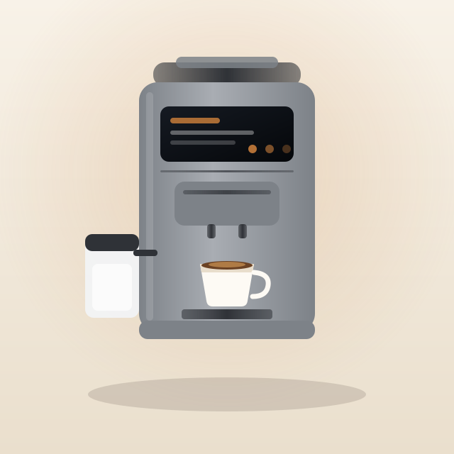
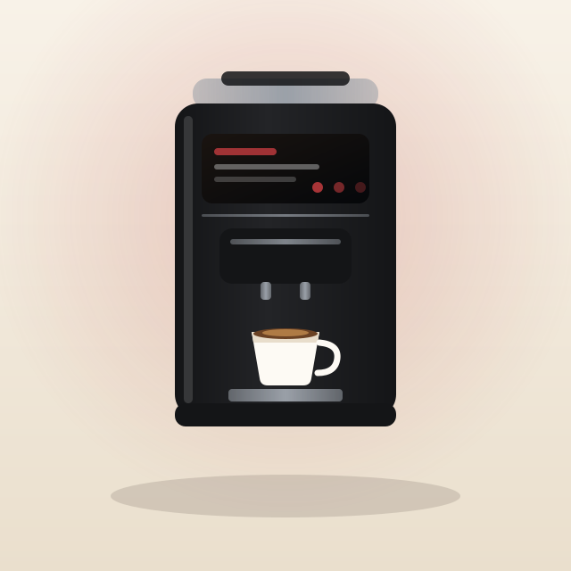

The Best Superautomatic Espresso Machine for Home in 2026
What actually matters when you are buying a bean-to-cup machine for a kitchen, and which of the machines we have tested fits which household.
A superautomatic espresso machine grinds the beans, doses them, tamps them, brews and ejects the puck without you touching any of it. That is the whole category. What separates a $600 machine from a $2,600 one is not whether it does those things — they all do — but how good the result is, how much cleaning it asks of you, and whether milk drinks are a button or a skill.
This guide covers what to look at, in the order it matters for a home kitchen, and then gives our picks from the machines currently in the BrewCompare database.
Start with the milk question, not the coffee
This is the decision that determines your budget. Every machine in this category makes acceptable to very good espresso. Not every machine makes a cappuccino without you doing the work.
A manual steam wand means you texture the milk yourself. It is cheaper, it gives you more control, and it is a skill that takes a few weeks to get right. A one-touch milk system means you press a button marked cappuccino and walk away. It costs several hundred dollars more and it needs cleaning — which is why the design of the milk system matters as much as its presence.
If nobody in your house wants to learn latte art, buy one-touch. If you are the kind of person who enjoys the process, a manual wand on a cheaper machine is more machine for the money.
The grinder matters more than the pressure
Every machine here advertises 15 bar. Almost every machine in this category does, and it stopped being a differentiator a decade ago — 9 bar is what actually reaches the puck on a well-built machine, and the number on the box is the pump's maximum.
What varies is the grinder. Look for a conical burr grinder, steel or ceramic, and check the number of grind settings. Thirteen steps, as on the Magnifica Evo, gives you fine control. Six steps, as on the Jura E8, is coarse — Jura compensates with extraction technology, but it is a real limitation if you like changing beans often. Under no circumstances buy a machine with a blade grinder.
Removable brew group: the maintenance dividing line
The brew group is the part that holds the puck. Some machines let you pull it out and rinse it under the tap. Some seal it in and run chemical cleaning cycles instead.
Removable is easier to trust and cheaper to keep clean — you can see what is happening in there. Sealed machines from Jura and similar brands run genuinely effective automated programs, but you are buying into their cleaning tablets for the life of the machine. Neither is wrong; know which one you are choosing.
Water filters change the maintenance schedule
Descaling is the chore that kills these machines when it is skipped. A water filter system — Philips AquaClean, Jura CLARIS, De'Longhi's softener — reduces scale buildup enough to stretch the interval dramatically. Philips rates the 5400 for up to 5,000 cups between descales with timely filter changes. If your water is hard, this feature is worth more than an extra drink on the menu.
Noise is a real spec and almost nobody publishes it
Grinding is the loudest thing these machines do, and it happens for ten to fifteen seconds every drink, usually first thing in the morning. Manufacturers rarely publish a decibel figure, so the numbers you find come from reviewers with a meter. Reviewers put the Magnifica Evo's grinder at 65–70 dB and measured the Philips 5400 at up to 79 dBA. Jura does not publish a figure for the E8.
If your kitchen opens onto a bedroom, weight this more heavily than the spec sheets suggest.
How many people are using it?
One or two people with similar taste: user profiles do not matter. Three or more, or an office: they matter a lot, because without them everyone re-dials the machine every morning. The Philips 5400 carries four profiles plus a guest slot. The Magnifica Evo has none. That single difference is worth more in a shared kitchen than any spec on the extraction side.
Our picks
Chosen from the machines currently in our database. Each links to the full specification breakdown.

Philips 3200 Series LatteGo EP3241/54
The cheapest route to a one-touch cappuccino from whole beans, with the same tube-free milk carafe as machines twice the price. The espresso is the compromise — thin and fast — so buy it for milk drinks, not for straight shots.

De'Longhi Magnifica Evo ECAM29043SB
A thirteen-step steel burr grinder and 15-bar extraction at a price where rivals still use pressurised baskets. All the money went into the cup instead of the milk system, which is the right trade if you enjoy the process.

De'Longhi Dinamica Plus ECAM37095TI
Nineteen-bar extraction, thirteen grind steps, sixteen recipes on a colour touchscreen, and a milk carafe that goes in the fridge between drinks. The most complete machine here under $1,000.

Miele CM 5310 Silence
Built around being quiet, and reviewers consistently rank it the quietest in its class. Full-bodied espresso and a build a clear step above its price rivals — you pay for it with a dated interface.

Jura E8 Automatic Coffee Machine (Piano Black)
Pulse Extraction makes a measurably better short drink and the machine maintains itself. Read the owner reviews on milk temperature first if flat whites are your main drink.
Common questions
Is 15 bar better than 9 bar?
No. Nine bar at the puck is the espresso standard; 15 bar is the pump's maximum, not the brewing pressure. Every machine in this category advertises 15 bar, so it does not distinguish them.
Do I need a machine with a removable brew group?
You do not need one, but it makes cleaning cheaper and more transparent. Sealed machines run effective automated cleaning cycles instead, at the cost of buying that brand's cleaning tablets for the machine's life.
How long does a superautomatic espresso machine last?
With regular descaling, seven to ten years is a normal lifespan for the machines in this range. Skipped descaling is the single most common cause of early failure, which is why water filter systems matter more than they look.
Can I use pre-ground coffee?
Yes. All three machines here have a bypass doser — a small chute for a single scoop of pre-ground coffee, which is how you make a decaf without emptying the hopper.
Are these machines loud?
The grinder is, for ten to fifteen seconds per drink. Reviewers measured 65–70 dB on the Magnifica Evo and up to 79 dBA on the Philips 5400. Jura does not publish a figure for the E8.
How much should I actually spend?
The steepest quality jump in this category is between about $500 and $1,000 — above that you are buying build, capacity and interface more than a better cup. Our highest-scoring machine overall costs under $900, and the most expensive machine here has the lowest value score.